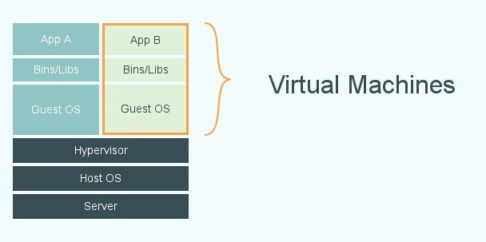
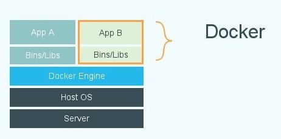

By Jordan Goetze
Computer Science
North Dakota State University
Fargo, North Dakota 58103
jordan.goetze@ndsu.edu
$ docker
At least not in the traditional sense
| Traditional VMs | Docker Containers |
|  |  |
| No Hypervisor | Images | Portability |
|
|
|
FROM dockerfile/nodejs
MAINTAINER <name> <email address>
RUN npm install -g http-server
ADD ./src /data/
CMD http-server /data/src -c-1 --cors
$ docker build -t <image name> <path to dockerfile directory>
$ docker run <image name>
These tools may be unstable and usage may be subject to change as they are extremely new.
| Simplifies installing docker: |
|
| Simplifies scaling docker: |
|
Create a Docker Swarm
$ docker run swarm create
0a7as347861277c3ea4eacc44e9d34e2
Create a Swarm Host
$ doeker-machine create -d virtualbox --swarm --swarm-master \
--swarm-discovery=token://0a7as347861277c3ea4eacc44e9d34e2 swarm-master
Create a few swarm nodes
docker-machine create -d virtualbox --swarm \
--swarm-discovery=token://0a7as347861277c3ea4eacc44e9d34e2 swarm-01
docker-machine create -d virtualbox --swarm \
--swarm-discovery=token://0a7as347861277c3ea4eacc44e9d34e2 swarm-02
docker-machine create -d virtualbox --swarm \
--swarm-discovery=token://0a7as347861277c3ea4eacc44e9d34e2 swarm-03
docker -H <swarm master ip>:<port> <docker command>
Creating a Master server is simple using Docker.
Creating a swarmed worker set is almost as easy using docker-machine and docker-swarm.
$ docker-compose scale 500
| Credits |
|---|
| "Announcing Docker Machine Beta". n.p. 26 Feb. 2015. Web. 30 Feb. |
| "Dockerfile Reference". n.p. d.n. Web 6 Feb. 2015. |
| "Docker Machine" n.p. n.d. Web. 31 Feb. 2015. |
| "Docker Swarm" n.p. n.d. Web. 31 Feb. 2015. |
| Credits Continued |
|---|
| Fowler, Martin. "Pheonix Server". n.p. 10 July. 2012. Web. 6 Feb. 2015. |
| "Orchestrating Docker with Machine, Swarm, and Compose". 26 Feb. 2015. Web. 30 Feb. 2015. |
| "Scaling Docker with Swarm" n.p. 26 Feb. 2015. Web. 30 Feb. 2015. |
| "What is Docker?" Docker. Docker Inc. n.d. Web. 6 Feb. 2015. |